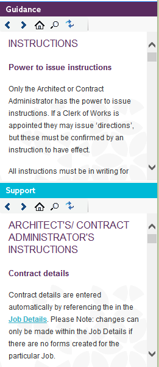

Contract Administrator Guidance |
The Contract Administrator Guidance panels (found in the right-hand side of the software) display helpful advice and information about contract administration and lines of communication, at the point of decision making.
Each time a form is selected in the active job, it synchronises the Guidance panel and displays the relevant guidance for that form.

If you cannot see your Contract Administrator Guidance, you may need to change your layout. See Changing NBS Contract Administrator Layout for more information.
See also:
Changing NBS Contract Administrator layout
Searching the Guidance
Synchronising the Guidance
Printing the Guidance